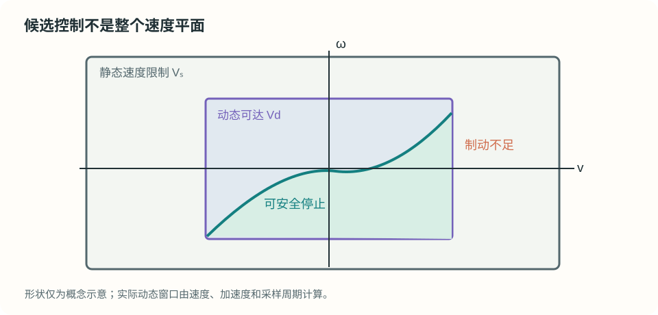
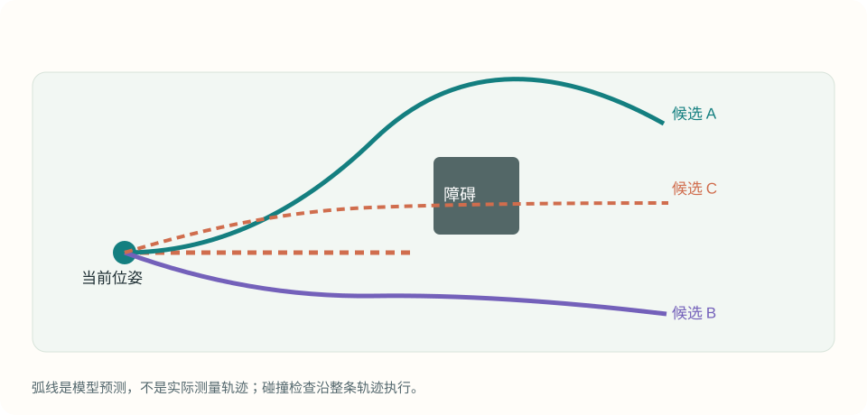
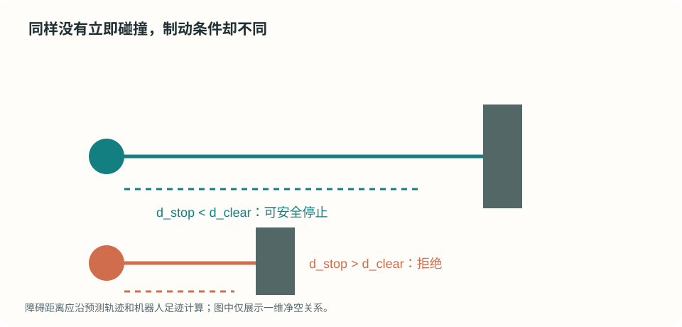

DWA：在速度空间里选择一段能安全停下的运动
机器人不能瞬间改变速度，也不能把“现在没有撞上”当成未来安全。动态窗口法把动力学可达性、短时轨迹预测和制动条件放进同一次局部控制决策。
DWA 不是先画一条全局路线，而是每个控制周期重新选择速度
移动机器人即使知道目标在哪，也不能把“朝目标方向走一小段”当成安全控制。机器人有速度和加速度限制，当前的速度状态决定下一瞬间能执行哪些命令；障碍物又可能离它很近。Dynamic Window Approach（DWA）把候选控制直接放在线速度与角速度空间中搜索，只评价短时间内可达、能在障碍前安全制动的运动。
原始 DWA 面向具有 synchro-drive 运动特性的移动机器人，Fox、Burgard 与 Thrun 在 1997 年论文中将机器人动力学、短时可达速度窗口、可安全停止的轨迹和目标/速度/障碍距离评分结合起来。它是局部反应式控制器，不负责证明从任意起点都存在一条到全局目标的路径。全局路线通常来自另一层规划器。
ROBOT MOTION PLANNING · 16

从一对速度命令得到一段可预测的圆弧
对平面差速/独轮车模型，状态写作 q=(x,y,θ)，控制量是线速度 v 和角速度 ω。在短预测区间里把控制保持为常数，机器人沿直线或圆弧运动：
若 ω=0，轨迹是直线；若 ω≠0，曲率为 κ=ω/v（v≠0），圆弧半径为 |v/ω|。对每个候选速度对，积分出短时轨迹，沿途检查机器人足迹是否与障碍相交，而不是只检查轨迹终点。
ROBOT MOTION PLANNING · 16

动态窗口：下一周期真正能执行的速度范围
先定义静态速度限制集合 V_s，再根据当前实测速度与加速度限制得到短时间内可达集合 V_d。若采样周期为 Δt、线加速度上限为 a_v、角加速度上限为 a_ω：
窗口不是整个 (v,ω) 平面，也不是机器人未来轨迹本身。它只描述一个控制周期内能够达到的速度命令范围。若允许倒车，速度区间必须包含负值；如果机器人是全向或 Ackermann 车型，运动学和速度窗口也必须相应改变。
可达还不够：轨迹必须允许机器人停下来
高速时，机器人即使当前预测轨迹还没有碰到障碍，也可能已经来不及制动。设候选弧线上到首次碰撞位置的可用行驶距离为 d(v,ω)，制动减速度幅值为 a_b，理想恒减速度下的停止距离为：
经典 DWA 的 admissible velocity 条件是：沿该候选轨迹可以在抵达障碍前安全停止。它把动态可达集合与安全制动集合求交：
公式 (4) 是理想化制动模型。真实系统要把感知与控制延迟、制动建立时间、轮胎/地面附着、坡度、机器人外形和安全裕量纳入检查。只用轨迹末端到障碍的距离代替整条轨迹的首次碰撞距离，是不正确的。
ROBOT MOTION PLANNING · 16

评分函数把“朝目标、速度、净空”折成一个决策
通过可达性和制动筛选后，DWA 对剩余轨迹进行打分。原始论文的核心偏好包含朝向目标的进展、前进速度和与障碍的距离；常见写法可概括为：
H 表示预测末端朝向与目标方向的匹配，V 表示期望速度，C 表示障碍净空。各实现的归一化、代价符号和具体 critic 不完全相同；权重只有在指标尺度明确后才有意义。一个未经归一化的“米 + 弧度 + 米每秒”加权和没有稳定的物理解释。
评分只能在安全候选中比较偏好，不能用“高分”抵消已发生的碰撞风险。若 admissibility 或足迹碰撞检查错误，再精细的权重也无法修复安全缺陷。
交互：偏向保守净空，还是偏向前进速度？
同一组通过碰撞和制动筛选的候选轨迹，可以因评分权重不同而选出不同控制。按钮只改变三个归一化指标的权重，并实时显示最高分的候选速度；它不会把不安全轨迹重新加入候选集。
均衡净空：v=0.1 m/s，ω=0.0 rad/s。
演示数据来自本章固定地图、候选采样和保守净空筛选；不代表真实机器人调参建议。
运行一个可复现的微型 DWA 候选筛选器
Python 3.10+，仅使用标准库。示例使用点机器人加圆形障碍、常值控制弧线、离散轨迹采样和保守的最小净空制动代理。它演示“先筛选，再评分”的顺序；不是完整车辆制动仿真，也不替代真实 footprint 连续碰撞检测。
import math
START=(0.,0.,0.)
GOAL=(3.,1.)
OBSTACLES=[(1.45,.05,.32)] # x, y, radius
ROBOT_RADIUS=.18
V_MAX=1.0
A_ACCEL=.8
A_BRAKE=1.0
DT_CONTROL=.5
HORIZON=1.6
DT_SIM=.05
def rollout(v,w):
x,y,theta=START
poses=[]
for _ in range(round(HORIZON/DT_SIM)):
if abs(w)<1e-9:
x+=v*math.cos(theta)*DT_SIM
y+=v*math.sin(theta)*DT_SIM
else:
theta_next=theta+w*DT_SIM
x+=v/w*(math.sin(theta_next)-math.sin(theta))
y-=v/w*(math.cos(theta_next)-math.cos(theta))
theta=theta_next
poses.append((x,y,theta))
return poses
v_now,w_now=.25,0.
v_window=(max(0.,v_now-A_ACCEL*DT_CONTROL),
min(V_MAX,v_now+A_ACCEL*DT_CONTROL))
w_window=(-.75,.75) # alpha_max * DT_CONTROL
feasible=[]
for v in (.1,.3,.5,.6):
if not(v_window[0]<=v<=v_window[1]): continue
for w in (-.6,0.,.6):
if not(w_window[0]<=w<=w_window[1]): continue
path=rollout(v,w)
clearance=min(math.hypot(x-ox,y-oy)-r-ROBOT_RADIUS
for x,y,_ in path for ox,oy,r in OBSTACLES)
stopping_distance=v*v/(2*A_BRAKE)
# Conservative teaching surrogate, not a full braking rollout.
if clearance<0 or clearance+1e-9<stopping_distance:
continue
x,y,theta=path[-1]
goal_heading=math.atan2(GOAL[1]-y,GOAL[0]-x)
error=math.atan2(math.sin(goal_heading-theta),
math.cos(goal_heading-theta))
heading=(math.cos(error)+1)/2
velocity=v/V_MAX
clearance_score=min(clearance,1.)
score=.50*heading+.25*velocity+.25*clearance_score
feasible.append((score,v,w,clearance,stopping_distance,heading))
assert v_window==(0.,.65) and feasible
best=max(feasible,key=lambda row:row[0])
assert (best[1],best[2])==(.1,0.)
assert all(row[3]+1e-9>=row[4] for row in feasible)
fast=max(feasible,key=lambda row:
.35*row[5]+.45*(row[1]/V_MAX)+.20*min(row[3],1.))
assert (fast[1],fast[2])==(.6,.6)
print("reachable v:",v_window,"reachable omega:",w_window)
print("balanced choice v,w:",best[1:3],"score:",round(best[0],3))
print("progress-weighted choice v,w:",fast[1:3],
"clearance:",round(fast[3],3),"stop:",round(fast[4],3))断言验证当前速度窗口、所有保留候选满足净空大于等于简化制动距离，以及改变权重后选出的速度不同。注意，代码把整段预测轨迹的最小净空与初始线速度的停止距离比较，属于保守教学近似，并非对转弯时减速过程的精确积分。
DWA 的优势是快速局部反应，弱点也是局部视野
- 预测时域过短：只看眼前安全，可能高速驶入一个无法掉头的死胡同。
- 速度采样过稀：窄小的可行速度区域可能被漏掉；采样过密则增加每周期计算量。
- 足迹建模错误：把非圆形机器人当点或小圆，可能在转弯时擦碰障碍。
- 权重与尺度：速度、目标朝向、净空的归一化不同，会改变控制偏好。
- 动态障碍：仅按静态障碍评价每条轨迹，不足以预测移动障碍的未来冲突。
Nav2 的 DWB Controller 是受 DWA 启发的可配置控制器，使用轨迹生成器与多个 critic 组合评分；不要把其插件体系、参数名或全部行为与 1997 年原始算法视为完全相同。工程上还应配合全局规划器、恢复行为、速度平滑和独立安全监控。